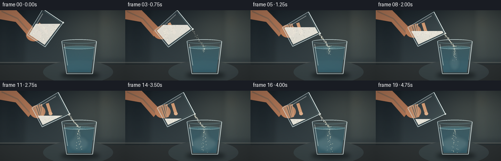
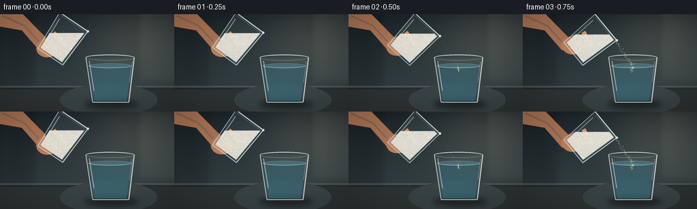

CODING AGENTS AS PIXEL WORLD MODELS
traex/GPT-5.6-Sol · material_0017
点击播放 · 原生 RGB 像素
逐轮保存的候选
回放视频、检查图与代码变化。
每份候选均可单独播放。实际图片检查记录在下方工具轨迹中。
候选 01播放与检查图
点击播放 · 原生 RGB 像素


展开代码变化
--- 上一保存版本
+++ 本次保存版本
@@ -0,0 +1,342 @@
+from pathlib import Path
+import math
+import numpy as np
+from PIL import Image, ImageDraw, ImageFilter, ImageChops
+import artifact_io
+
+W, H, N = 256, 144, 20
+S = 4
+SW, SH = W*S, H*S
+CASE_DIR = Path(__file__).resolve().parent
+
+
+def sc(v):
+ return int(round(v*S))
+
+def pts(seq):
+ return [(sc(x), sc(y)) for x, y in seq]
+
+def ease(x):
+ x = max(0.0, min(1.0, x))
+ return x*x*(3-2*x)
+
+def rgba_layer():
+ return Image.new('RGBA', (SW, SH), (0,0,0,0))
+
+def composite(base, layer):
+ return Image.alpha_composite(base, layer)
+
+def ellipse(draw, box, **kw):
+ draw.ellipse(tuple(sc(x) for x in box), **kw)
+
+def line(draw, xy, **kw):
+ draw.line(pts(xy), **kw)
+
+def polygon(draw, xy, **kw):
+ draw.polygon(pts(xy), **kw)
+
+def transform(cx, cy, angle_deg, x, y):
+ a = math.radians(angle_deg)
+ ca, sa = math.cos(a), math.sin(a)
+ return cx + ca*x - sa*y, cy + sa*x + ca*y
+
+
+def background(frame_i):
+ # Warm, softly lit kitchen background and cool slate counter.
+ yy, xx = np.mgrid[0:SH, 0:SW]
+ y = yy / S
+ x = xx / S
+ top = np.zeros((SH, SW, 4), dtype=np.uint8)
+ wall = np.clip(y/112.0, 0, 1)
+ # neutral blue-gray wall, warmer toward the right-side window
+ glow = np.exp(-((x-202)**2/(2*56**2) + (y-35)**2/(2*42**2)))
+ top[...,0] = np.clip(29 + 23*wall + 29*glow, 0, 255)
+ top[...,1] = np.clip(38 + 25*wall + 27*glow, 0, 255)
+ top[...,2] = np.clip(44 + 23*wall + 20*glow, 0, 255)
+ top[...,3] = 255
+ im = Image.fromarray(top, 'RGBA')
+
+ # Out-of-focus vertical cabinets and window shapes.
+ lay = rgba_layer(); d = ImageDraw.Draw(lay, 'RGBA')
+ d.rectangle((sc(0),0,sc(48),sc(109)), fill=(16,23,28,78))
+ d.rectangle((sc(8),sc(10),sc(42),sc(102)), outline=(81,92,95,30), width=sc(1))
+ d.rectangle((sc(201),0,sc(256),sc(102)), fill=(176,181,158,20))
+ d.rectangle((sc(218),0,sc(222),sc(102)), fill=(220,225,207,20))
+ d.rectangle((sc(201),sc(48),sc(256),sc(52)), fill=(220,225,207,15))
+ # bokeh lights
+ ellipse(d, (207,12,226,31), fill=(241,218,164,18))
+ ellipse(d, (232,27,252,47), fill=(227,230,200,13))
+ ellipse(d, (52,18,63,29), fill=(169,200,198,9))
+ lay = lay.filter(ImageFilter.GaussianBlur(sc(5)))
+ im = composite(im, lay)
+
+ # Counter plane and edge.
+ lay = rgba_layer(); d = ImageDraw.Draw(lay, 'RGBA')
+ d.rectangle((0,sc(106),SW,SH), fill=(47,52,53,255))
+ d.rectangle((0,sc(106),SW,sc(108)), fill=(107,111,106,135))
+ d.rectangle((0,sc(109),SW,sc(111)), fill=(18,24,27,105))
+ # subtle counter light pool
+ ellipse(d, (88,103,231,150), fill=(112,113,102,23))
+ im = composite(im, lay)
+ return im
+
+
+def draw_hand(im, cx, cy, ang):
+ # A quiet human cue behind the upper glass; muted skin tones keep focus on salt.
+ lay = rgba_layer(); d = ImageDraw.Draw(lay, 'RGBA')
+ grip = transform(cx, cy, ang, -8, 22)
+ # forearm entering at upper left
+ polygon(d, [(-8,-5), (29,-5), (71,38), (58,54), (32,24), (-8,17)],
+ fill=(177,119,87,255))
+ line(d, [(3,2),(36,17),(63,47)], fill=(220,157,116,150), width=sc(3))
+ ellipse(d, (grip[0]-19, grip[1]-14, grip[0]+13, grip[1]+13), fill=(191,130,94,255))
+ # fingers curling behind and around the glass
+ for j, off in enumerate((-13,-5,4)):
+ a = transform(cx, cy, ang, -20+off*.08, 12+j*5)
+ b = transform(cx, cy, ang, 4, 22+j*2)
+ line(d, [a,b], fill=(218,151,108,245), width=sc(7-j*.6))
+ line(d, [a,b], fill=(235,174,130,90), width=sc(2))
+ # thumb crossing near the upper side
+ a = transform(cx, cy, ang, -16, -1)
+ b = transform(cx, cy, ang, 6, 3)
+ line(d, [a,b], fill=(225,158,113,245), width=sc(7))
+ ellipse(d, (b[0]-3.8,b[1]-3.2,b[0]+4,b[1]+3.5), fill=(238,179,137,245))
+ lay = lay.filter(ImageFilter.GaussianBlur(sc(.35)))
+ return composite(im, lay)
+
+
+def draw_source_glass(im, frame_i, cx, cy, ang, amount):
+ outer_local = [(-25,-31),(25,-31),(22,31),(-22,31)]
+ inner_local = [(-22,-28),(22,-28),(19,28),(-19,28)]
+ outer = [transform(cx,cy,ang,*p) for p in outer_local]
+ inner = [transform(cx,cy,ang,*p) for p in inner_local]
+
+ # faint tinted transparent body
+ lay = rgba_layer(); d = ImageDraw.Draw(lay, 'RGBA')
+ polygon(d, outer, fill=(174,211,218,25))
+ im = composite(im, lay)
+
+ # Salt bed: horizontal under gravity, clipped by the moving inner glass.
+ mask = Image.new('L',(SW,SH),0); md = ImageDraw.Draw(mask)
+ md.polygon(pts(inner), fill=255)
+ ys = [p[1] for p in inner]; ymin,ymax=min(ys),max(ys)
+ cutoff = ymin + (1.0-amount)*(ymax-ymin)
+ bedmask = Image.new('L',(SW,SH),0); bd=ImageDraw.Draw(bedmask)
+ bd.rectangle((0,sc(cutoff),SW,SH),fill=245)
+ saltmask = ImageChops.multiply(mask,bedmask)
+ salt = rgba_layer()
+ # warm-white granular body gradient
+ arr = np.zeros((SH,SW,4),dtype=np.uint8)
+ yy=np.arange(SH)[:,None]/S
+ shade=np.clip(240-(yy-cutoff)*0.35,219,244).astype(np.uint8)
+ arr[...,0]=shade; arr[...,1]=np.clip(shade-4,0,255); arr[...,2]=np.clip(shade-14,0,255); arr[...,3]=np.array(saltmask)
+ salt=Image.fromarray(arr,'RGBA')
+ im=composite(im,salt)
+
+ # Stable-looking salt crystals clipped to the bed.
+ grain=rgba_layer(); gd=ImageDraw.Draw(grain,'RGBA')
+ rng=np.random.default_rng(2701 + frame_i*13)
+ bx0,bx1=min(p[0] for p in inner),max(p[0] for p in inner)
+ for k in range(165):
+ x=float(rng.uniform(bx0,bx1)); y=float(rng.uniform(cutoff,ymax))
+ px,py=sc(x),sc(y)
+ if 0<=px<SW and 0<=py<SH and saltmask.getpixel((px,py))>100:
+ r=float(rng.uniform(.22,.72))
+ c=(255,253,231,int(rng.integers(100,235))) if k%3 else (181,177,158,115)
+ ellipse(gd,(x-r,y-r,x+r,y+r),fill=c)
+ im=composite(im,grain)
+
+ # Glass contours, bottom refraction, highlights, and double-line rim.
+ lay=rgba_layer(); d=ImageDraw.Draw(lay,'RGBA')
+ # side walls
+ line(d,[outer[0],outer[3]],fill=(216,239,242,184),width=sc(1.05))
+ line(d,[outer[1],outer[2]],fill=(225,244,244,205),width=sc(1.15))
+ line(d,[inner[0],inner[3]],fill=(100,145,153,72),width=sc(.55))
+ line(d,[inner[1],inner[2]],fill=(113,158,165,78),width=sc(.55))
+ line(d,[outer[3],outer[2]],fill=(224,241,240,174),width=sc(1.15))
+ # long highlight along left wall
+ h1=transform(cx,cy,ang,-20,-23); h2=transform(cx,cy,ang,-18,14)
+ line(d,[h1,h2],fill=(255,255,249,147),width=sc(1.1))
+ # mouth edge, doubled to signal clear rim
+ line(d,[outer[0],outer[1]],fill=(238,252,250,235),width=sc(1.45))
+ i0=transform(cx,cy,ang,-21,-28.5); i1=transform(cx,cy,ang,21,-28.5)
+ line(d,[i0,i1],fill=(92,129,135,148),width=sc(.75))
+ # bright lip at pouring side
+ ellipse(d,(outer[1][0]-1.7,outer[1][1]-1.7,outer[1][0]+1.7,outer[1][1]+1.7),fill=(247,255,249,220))
+ im=composite(im,lay)
+ return im, transform(cx,cy,ang,24,-29)
+
+
+def lower_glass_base(im):
+ # Shadow anchors the receiving glass on the counter.
+ shadow=rgba_layer(); sd=ImageDraw.Draw(shadow,'RGBA')
+ ellipse(sd,(124,126,204,140),fill=(4,8,10,125))
+ shadow=shadow.filter(ImageFilter.GaussianBlur(sc(4)))
+ im=composite(im,shadow)
+
+ # transparent glass body behind water
+ lay=rgba_layer(); d=ImageDraw.Draw(lay,'RGBA')
+ polygon(d,[(126,64),(197,64),(189,130),(136,130)],fill=(171,213,221,17))
+ im=composite(im,lay)
+
+ # blue water volume clipped to tapered interior
+ mask=Image.new('L',(SW,SH),0); md=ImageDraw.Draw(mask)
+ md.polygon(pts([(130,76),(193,76),(185.8,127),(138.5,127)]),fill=205)
+ yy,xx=np.mgrid[0:SH,0:SW]; y=yy/S
+ a=np.clip(88+(y-76)*1.05,88,147)
+ water=np.zeros((SH,SW,4),dtype=np.uint8)
+ water[...,0]=np.clip(50+(y-76)*.10,50,60)
+ water[...,1]=np.clip(121+(y-76)*.26,121,138)
+ water[...,2]=np.clip(143+(y-76)*.34,143,164)
+ water[...,3]=(np.array(mask)/255*a).astype(np.uint8)
+ im=composite(im,Image.fromarray(water,'RGBA'))
+ # back water line
+ lay=rgba_layer(); d=ImageDraw.Draw(lay,'RGBA')
+ ellipse(d,(130,72.8,193,79.3),fill=(104,178,190,70),outline=(181,224,226,120),width=sc(.6))
+ im=composite(im,lay)
+ return im, mask
+
+
+def draw_stream(im, origin, frame_i, strength):
+ if strength <= .01:
+ return im
+ target=(161.2,75.5)
+ # silky aggregate of many grains, not an opaque liquid stream
+ haze=rgba_layer(); hd=ImageDraw.Draw(haze,'RGBA')
+ line(hd,[origin,target],fill=(244,239,214,int(65*strength)),width=sc(2.2))
+ haze=haze.filter(ImageFilter.GaussianBlur(sc(1.1)))
+ im=composite(im,haze)
+ lay=rgba_layer(); d=ImageDraw.Draw(lay,'RGBA')
+ rng=np.random.default_rng(950 + frame_i)
+ n=int(14+40*strength)
+ ox,oy=origin; tx,ty=target
+ for k in range(n):
+ # phase advances between frames, giving downward movement
+ u=(k*0.6180339 + frame_i*.29) % 1.0
+ x=ox+(tx-ox)*u + rng.normal(0,1.05+u*.35)
+ y=oy+(ty-oy)*u + 2.3*u*(1-u) + rng.normal(0,.42)
+ r=float(rng.uniform(.32,.86))
+ col=(255,252,int(rng.integers(220,244)),int(rng.integers(145,245)*strength))
+ ellipse(d,(x-r,y-r*.75,x+r,y+r*.75),fill=col)
+ # fine splash crown where grains meet the water
+ for k in range(7):
+ ph=(k/7+frame_i*.13)%1
+ x=161+(ph-.5)*9
+ y=75-abs(ph-.5)*3-rng.uniform(0,1)
+ ellipse(d,(x-.45,y-.45,x+.45,y+.45),fill=(247,245,220,int(180*strength)))
+ return composite(im,lay)
+
+
+def draw_plume(im, water_mask, frame_i, pour_progress, strength):
+ if pour_progress <= 0:
+ return im
+ q=min(1.0,pour_progress)
+ cloud=rgba_layer(); cd=ImageDraw.Draw(cloud,'RGBA')
+ rng=np.random.default_rng(6000+frame_i)
+ depth=7+47*q
+ # Thin central falling column, which bifurcates and diffuses with time.
+ for j in range(13):
+ x0=161+rng.normal(0,1.0)
+ y0=76+rng.uniform(-1,1)
+ side=(-1 if j%2 else 1)
+ width=(2.0+8.0*q)*(0.35+rng.random()*.75)
+ x1=x0+side*width*(q**1.4)+rng.normal(0,2)
+ y1=76+depth*(.45+rng.random()*.55)
+ mid=((x0+x1)/2 + math.sin(j*1.7+frame_i*.3)*2.5*q, (y0+y1)/2)
+ alpha=int((24+45*strength)*(1-.025*j))
+ line(cd,[(x0,y0),mid,(x1,y1)],fill=(251,246,218,alpha),width=sc(1.3+rng.random()*2.5*q))
+ r=2+rng.random()*5*q
+ ellipse(cd,(x1-r,y1-r*.65,x1+r,y1+r*.65),fill=(246,243,221,int(alpha*.65)))
+ # Late diffuse salt cloud near the lower half of the glass.
+ if q>.38:
+ spread=9+19*(q-.38)/.62
+ ellipse(cd,(161-spread,93,161+spread,124),fill=(240,241,223,int(18+18*q)))
+ cloud=cloud.filter(ImageFilter.GaussianBlur(sc(2.0+1.5*q)))
+ # Clip plume to water volume.
+ a=cloud.getchannel('A')
+ a=ImageChops.multiply(a,water_mask)
+ cloud.putalpha(a)
+ im=composite(im,cloud)
+
+ # Discrete grains remain visible within the cloudy dissolution plume.
+ dots=rgba_layer(); dd=ImageDraw.Draw(dots,'RGBA')
+ for k in range(int(10+23*q)):
+ u=((k*.381966+frame_i*.19)%1)
+ y=78+u*depth
+ spread=1.2+u*11*q
+ x=161+math.sin(k*2.13+frame_i*.37)*spread*.65+rng.normal(0,1)
+ px,py=sc(x),sc(y)
+ if 0<=px<SW and 0<=py<SH and water_mask.getpixel((px,py))>0:
+ r=.28+rng.random()*.48
+ ellipse(dd,(x-r,y-r,x+r,y+r),fill=(255,251,222,int(110+90*(1-u))))
+ return composite(im,dots)
+
+
+def lower_glass_front(im, frame_i, strength):
+ lay=rgba_layer(); d=ImageDraw.Draw(lay,'RGBA')
+ # opening rim in front and rear highlights
+ d.arc((sc(125.5),sc(59.5),sc(197.5),sc(68.5)),180,360,fill=(224,244,244,205),width=sc(1.25))
+ d.arc((sc(125.5),sc(59.5),sc(197.5),sc(68.5)),0,180,fill=(149,189,196,115),width=sc(.8))
+ d.arc((sc(128),sc(62),sc(195),sc(67.5)),0,180,fill=(74,117,126,105),width=sc(.6))
+ # front water surface arc
+ d.arc((sc(130),sc(72.8),sc(193),sc(79.5)),0,180,fill=(204,233,232,145),width=sc(.8))
+ # tapering glass walls and heavy base
+ line(d,[(126,64),(136,130)],fill=(218,240,242,190),width=sc(1.25))
+ line(d,[(197,64),(189,130)],fill=(232,247,246,213),width=sc(1.4))
+ line(d,[(136,130),(189,130)],fill=(225,243,241,202),width=sc(1.35))
+ line(d,[(139,127.2),(186,127.2)],fill=(99,148,156,100),width=sc(.75))
+ # specular strips
+ line(d,[(131,69),(138,113)],fill=(255,255,247,128),width=sc(1.15))
+ line(d,[(194,70),(190,101)],fill=(255,255,250,93),width=sc(.72))
+ # moving water glint near impact
+ if strength>.05:
+ for j in range(3):
+ w=4+j*4
+ d.arc((sc(161-w),sc(73.5-j*.25),sc(161+w),sc(78+j*.25)),0,180,
+ fill=(225,241,232,int(105*strength/(j+1)**.25)),width=sc(.55))
+ return composite(im,lay)
+
+
+def make_frame(i):
+ t=i/(N-1)
+ # deliberate prep, sustained gentle pour, and tapering final grains
+ tilt=ease(min(1,t/0.28))
+ ang=34+28*tilt
+ cx=91+12*tilt
+ cy=37+3*tilt
+ start=ease((t-.08)/.16)
+ end=1-ease((t-.82)/.18)
+ strength=max(0,start*end)
+ poured=ease((t-.10)/.72)
+ amount=.62-.43*poured
+
+ im=background(i)
+ im=draw_hand(im,cx,cy,ang)
+ # receiving glass behind stream/plume
+ im,water_mask=lower_glass_base(im)
+ im,origin=draw_source_glass(im,i,cx,cy,ang,amount)
+ im=draw_stream(im,origin,i,strength)
+ im=draw_plume(im,water_mask,i,poured,strength)
+ im=lower_glass_front(im,i,strength)
+
+ # very mild cinematic vignette and fine deterministic sensor grain
+ arr=np.asarray(im.convert('RGB')).astype(np.float32)
+ yy,xx=np.mgrid[0:SH,0:SW]
+ dx=(xx-SW/2)/(SW/2); dy=(yy-SH/2)/(SH/2)
+ vig=np.clip(1-.115*(dx*dx+dy*dy),.78,1)[...,None]
+ arr*=vig
+ rng=np.random.default_rng(88000+i)
+ arr += rng.normal(0,.7,arr.shape[:2])[...,None]
+ arr=np.clip(arr,0,255).astype(np.uint8)
+ out=Image.fromarray(arr,'RGB').resize((W,H),Image.Resampling.LANCZOS)
+ return np.asarray(out,dtype=np.uint8)
+
+
+def main():
+ frames=np.stack([make_frame(i) for i in range(N)],axis=0)
+ assert frames.shape==(N,H,W,3) and frames.dtype==np.uint8
+ artifact_io.save(frames,CASE_DIR)
+ print(f'Saved {N} RGB frames to {CASE_DIR}')
+
+if __name__=='__main__':
+ main()
可观测工具轨迹
实际执行的命令与返回图片。
命令 1exit 0
/bin/bash -lc "cat prompt.txt && printf '\\n--- GENERATION_RULES.md ---\\n' && cat GENERATION_RULES.md"
命令 2exit 0
/bin/bash -lc "cat task_spec.json && printf '\\n--- FILES ---\\n' && find . -maxdepth 2 -type f -printf '%p\\n' | sort"
命令 3exit 0
/bin/bash -lc "which ffmpeg || true; which python3 || true; python3 - <<'PY' mods=['PIL','numpy','cv2','moviepy','cairo'] for m in mods: try: x=__import__(m); print(m,'OK',getattr(x,'__version__','')) except Exception as e: print(m,'NO',e) PY"
命令 4exit 0
/bin/bash -lc "sed -n '1,260p' artifact_io.py"
命令 5exit 0
/bin/bash -lc "sed -n '1,220p' player_template.html"
命令 6exit 0
/bin/bash -lc "cat > generate.py <<'PY'
from pathlib import Path
import math
import numpy as np
from PIL import Image, ImageDraw, ImageFilter, ImageChops
import artifact_io
W, H, N = 256, 144, 20
S = 4
SW, SH = W*S, H*S
CASE_DIR = Path(__file__).resolve().parent
def sc(v):
return int(round(v*S))
def pts(seq):
return [(sc(x), sc(y)) for x, y in seq]
def ease(x):
x = max(0.0, min(1.0, x))
return x*x*(3-2*x)
def rgba_layer():
return Image.new('RGBA', (SW, SH), (0,0,0,0))
def composite(base, layer):
return Image.alpha_composite(base, layer)
def ellipse(draw, box, **kw):
draw.ellipse(tuple(sc(x) for x in box), **kw)
def line(draw, xy, **kw):
draw.line(pts(xy), **kw)
def polygon(draw, xy, **kw):
draw.polygon(pts(xy), **kw)
def transform(cx, cy, angle_deg, x, y):
a = math.radians(angle_deg)
ca, sa = math.cos(a), math.sin(a)
return cx + ca*x - sa*y, cy + sa*x + ca*y
def background(frame_i):
# Warm, softly lit kitchen background and cool slate counter.
yy, xx = np.mgrid[0:SH, 0:SW]
y = yy / S
x = xx / S
top = np.zeros((SH, SW, 4), dtype=np.uint8)
wall = np.clip(y/112.0, 0, 1)
# neutral blue-gray wall, warmer toward the right-side window
glow = np.exp(-((x-202)**2/(2*56**2) + (y-35)**2/(2*42**2)))
top[...,0] = np.clip(29 + 23*wall + 29*glow, 0, 255)
top[...,1] = np.clip(38 + 25*wall + 27*glow, 0, 255)
top[...,2] = np.clip(44 + 23*wall + 20*glow, 0, 255)
top[...,3] = 255
im = Image.fromarray(top, 'RGBA')
# Out-of-focus vertical cabinets and window shapes.
lay = rgba_layer(); d = ImageDraw.Draw(lay, 'RGBA')
d.rectangle((sc(0),0,sc(48),sc(109)), fill=(16,23,28,78))
d.rectangle((sc(8),sc(10),sc(42),sc(102)), outline=(81,92,95,30), width=sc(1))
d.rectangle((sc(201),0,sc(256),sc(102)), fill=(176,181,158,20))
d.rectangle((sc(218),0,sc(222),sc(102)), fill=(220,225,207,20))
d.rectangle((sc(201),sc(48),sc(256),sc(52)), fill=(220,225,207,15))
# bokeh lights
ellipse(d, (207,12,226,31), fill=(241,218,164,18))
ellipse(d, (232,27,252,47), fill=(227,230,200,13))
ellipse(d, (52,18,63,29), fill=(169,200,198,9))
lay = lay.filter(ImageFilter.GaussianBlur(sc(5)))
im = composite(im, lay)
# Counter plane and edge.
lay = rgba_layer(); d = ImageDraw.Draw(lay, 'RGBA')
d.rectangle((0,sc(106),SW,SH), fill=(47,52,53,255))
d.rectangle((0,sc(106),SW,sc(108)), fill=(107,111,106,135))
d.rectangle((0,sc(109),SW,sc(111)), fill=(18,24,27,105))
# subtle counter light pool
ellipse(d, (88,103,231,150), fill=(112,113,102,23))
im = composite(im, lay)
return im
def draw_hand(im, cx, cy, ang):
# A quiet human cue behind the upper glass; muted skin tones keep focus on salt.
lay = rgba_layer(); d = ImageDraw.Draw(lay, 'RGBA')
grip = transform(cx, cy, ang, -8, 22)
# forearm entering at upper left
polygon(d, [(-8,-5), (29,-5), (71,38), (58,54), (32,24), (-8,17)],
fill=(177,119,87,255))
line(d, [(3,2),(36,17),(63,47)], fill=(220,157,116,150), width=sc(3))
ellipse(d, (grip[0]-19, grip[1]-14, grip[0]+13, grip[1]+13), fill=(191,130,94,255))
# fingers curling behind and around the glass
for j, off in enumerate((-13,-5,4)):
a = transform(cx, cy, ang, -20+off*.08, 12+j*5)
b = transform(cx, cy, ang, 4, 22+j*2)
line(d, [a,b], fill=(218,151,108,245), width=sc(7-j*.6))
line(d, [a,b], fill=(235,174,130,90), width=sc(2))
# thumb crossing near the upper side
a = transform(cx, cy, ang, -16, -1)
b = transform(cx, cy, ang, 6, 3)
line(d, [a,b], fill=(225,158,113,245), width=sc(7))
ellipse(d, (b[0]-3.8,b[1]-3.2,b[0]+4,b[1]+3.5), fill=(238,179,137,245))
lay = lay.filter(ImageFilter.GaussianBlur(sc(.35)))
return composite(im, lay)
def draw_source_glass(im, frame_i, cx, cy, ang, amount):
outer_local = [(-25,-31),(25,-31),(22,31),(-22,31)]
inner_local = [(-22,-28),(22,-28),(19,28),(-19,28)]
outer = [transform(cx,cy,ang,*p) for p in outer_local]
inner = [transform(cx,cy,ang,*p) for p in inner_local]
# faint tinted transparent body
lay = rgba_layer(); d = ImageDraw.Draw(lay, 'RGBA')
polygon(d, outer, fill=(174,211,218,25))
im = composite(im, lay)
# Salt bed: horizontal under gravity, clipped by the moving inner glass.
mask = Image.new('L',(SW,SH),0); md = ImageDraw.Draw(mask)
md.polygon(pts(inner), fill=255)
ys = [p[1] for p in inner]; ymin,ymax=min(ys),max(ys)
cutoff = ymin + (1.0-amount)*(ymax-ymin)
bedmask = Image.new('L',(SW,SH),0); bd=ImageDraw.Draw(bedmask)
bd.rectangle((0,sc(cutoff),SW,SH),fill=245)
saltmask = ImageChops.multiply(mask,bedmask)
salt = rgba_layer()
# warm-white granular body gradient
arr = np.zeros((SH,SW,4),dtype=np.uint8)
yy=np.arange(SH)[:,None]/S
shade=np.clip(240-(yy-cutoff)*0.35,219,244).astype(np.uint8)
arr[...,0]=shade; arr[...,1]=np.clip(shade-4,0,255); arr[...,2]=np.clip(shade-14,0,255); arr[...,3]=np.array(saltmask)
salt=Image.fromarray(arr,'RGBA')
im=composite(im,salt)
# Stable-looking salt crystals clipped to the bed.
grain=rgba_layer(); gd=ImageDraw.Draw(grain,'RGBA')
rng=np.random.default_rng(2701 + frame_i*13)
bx0,bx1=min(p[0] for p in inner),max(p[0] for p in inner)
for k in range(165):
x=float(rng.uniform(bx0,bx1)); y=float(rng.uniform(cutoff,ymax))
px,py=sc(x),sc(y)
if 0<=px<SW and 0<=py<SH and saltmask.getpixel((px,py))>100:
r=float(rng.uniform(.22,.72))
c=(255,253,231,int(rng.integers(100,235))) if k%3 else (181,177,158,115)
ellipse(gd,(x-r,y-r,x+r,y+r),fill=c)
im=composite(im,grain)
# Glass contours, bottom refraction, highlights, and double-line rim.
lay=rgba_layer(); d=ImageDraw.Draw(lay,'RGBA')
# side walls
line(d,[outer[0],outer[3]],fill=(216,239,242,184),width=sc(1.05))
line(d,[outer[1],outer[2]],fill=(225,244,244,205),width=sc(1.15))
line(d,[inner[0],inner[3]],fill=(100,145,153,72),width=sc(.55))
line(d,[inner[1],inner[2]],fill=(113,158,165,78),width=sc(.55))
line(d,[outer[3],outer[2]],fill=(224,241,240,174),width=sc(1.15))
# long highlight along left wall
h1=transform(cx,cy,ang,-20,-23); h2=transform(cx,cy,ang,-18,14)
line(d,[h1,h2],fill=(255,255,249,147),width=sc(1.1))
# mouth edge, doubled to signal clear rim
line(d,[outer[0],outer[1]],fill=(238,252,250,235),width=sc(1.45))
i0=transform(cx,cy,ang,-21,-28.5); i1=transform(cx,cy,ang,21,-28.5)
line(d,[i0,i1],fill=(92,129,135,148),width=sc(.75))
# bright lip at pouring side
ellipse(d,(outer[1][0]-1.7,outer[1][1]-1.7,outer[1][0]+1.7,outer[1][1]+1.7),fill=(247,255,249,220))
im=composite(im,lay)
return im, transform(cx,cy,ang,24,-29)
def lower_glass_base(im):
# Shadow anchors the receiving glass on the counter.
shadow=rgba_layer(); sd=ImageDraw.Draw(shadow,'RGBA')
ellipse(sd,(124,126,204,140),fill=(4,8,10,125))
shadow=shadow.filter(ImageFilter.GaussianBlur(sc(4)))
im=composite(im,shadow)
# transparent glass body behind water
lay=rgba_layer(); d=ImageDraw.Draw(lay,'RGBA')
polygon(d,[(126,64),(197,64),(189,130),(136,130)],fill=(171,213,221,17))
im=composite(im,lay)
# blue water volume clipped to tapered interior
mask=Image.new('L',(SW,SH),0); md=ImageDraw.Draw(mask)
md.polygon(pts([(130,76),(193,76),(185.8,127),(138.5,127)]),fill=205)
yy,xx=np.mgrid[0:SH,0:SW]; y=yy/S
a=np.clip(88+(y-76)*1.05,88,147)
water=np.zeros((SH,SW,4),dtype=np.uint8)
water[...,0]=np.clip(50+(y-76)*.10,50,60)
water[...,1]=np.clip(121+(y-76)*.26,121,138)
water[...,2]=np.clip(143+(y-76)*.34,143,164)
water[...,3]=(np.array(mask)/255*a).astype(np.uint8)
im=composite(im,Image.fromarray(water,'RGBA'))
# back water line
lay=rgba_layer(); d=ImageDraw.Draw(lay,'RGBA')
ellipse(d,(130,72.8,193,79.3),fill=(104,178,190,70),outline=(181,224,226,120),width=sc(.6))
im=composite(im,lay)
return im, mask
def draw_stream(im, origin, frame_i, strength):
if strength <= .01:
return im
target=(161.2,75.5)
# silky aggregate of many grains, not an opaque liquid stream
haze=rgba_layer(); hd=ImageDraw.Draw(haze,'RGBA')
line(hd,[origin,target],fill=(244,239,214,int(65*strength)),width=sc(2.2))
haze=haze.filter(ImageFilter.GaussianBlur(sc(1.1)))
im=composite(im,haze)
lay=rgba_layer(); d=ImageDraw.Draw(lay,'RGBA')
rng=np.random.default_rng(950 + frame_i)
n=int(14+40*strength)
ox,oy=origin; tx,ty=target
for k in range(n):
# phase advances between frames, giving downward movement
u=(k*0.6180339 + frame_i*.29) % 1.0
x=ox+(tx-ox)*u + rng.normal(0,1.05+u*.35)
y=oy+(ty-oy)*u + 2.3*u*(1-u) + rng.normal(0,.42)
r=float(rng.uniform(.32,.86))
col=(255,252,int(rng.integers(220,244)),int(rng.integers(145,245)*strength))
ellipse(d,(x-r,y-r*.75,x+r,y+r*.75),fill=col)
# fine splash crown where grains meet the water
for k in range(7):
ph=(k/7+frame_i*.13)%1
x=161+(ph-.5)*9
y=75-abs(ph-.5)*3-rng.uniform(0,1)
ellipse(d,(x-.45,y-.45,x+.45,y+.45),fill=(247,245,220,int(180*strength)))
return composite(im,lay)
def draw_plume(im, water_mask, frame_i, pour_progress, strength):
if pour_progress <= 0:
return im
q=min(1.0,pour_progress)
cloud=rgba_layer(); cd=ImageDraw.Draw(cloud,'RGBA')
rng=np.random.default_rng(6000+frame_i)
depth=7+47*q
# Thin central falling column, which bifurcates and diffuses with time.
for j in range(13):
x0=161+rng.normal(0,1.0)
y0=76+rng.uniform(-1,1)
side=(-1 if j%2 else 1)
width=(2.0+8.0*q)*(0.35+rng.random()*.75)
x1=x0+side*width*(q**1.4)+rng.normal(0,2)
y1=76+depth*(.45+rng.random()*.55)
mid=((x0+x1)/2 + math.sin(j*1.7+frame_i*.3)*2.5*q, (y0+y1)/2)
alpha=int((24+45*strength)*(1-.025*j))
line(cd,[(x0,y0),mid,(x1,y1)],fill=(251,246,218,alpha),width=sc(1.3+rng.random()*2.5*q))
r=2+rng.random()*5*q
ellipse(cd,(x1-r,y1-r*.65,x1+r,y1+r*.65),fill=(246,243,221,int(alpha*.65)))
# Late diffuse salt cloud near the lower half of the glass.
if q>.38:
spread=9+19*(q-.38)/.62
ellipse(cd,(161-spread,93,161+spread,124),fill=(240,241,223,int(18+18*q)))
cloud=cloud.filter(ImageFilter.GaussianBlur(sc(2.0+1.5*q)))
# Clip plume to water volume.
a=cloud.getchannel('A')
a=ImageChops.multiply(a,water_mask)
cloud.putalpha(a)
im=composite(im,cloud)
# Discrete grains remain visible within the cloudy dissolution plume.
dots=rgba_layer(); dd=ImageDraw.Draw(dots,'RGBA')
for k in range(int(10+23*q)):
u=((k*.381966+frame_i*.19)%1)
y=78+u*depth
spread=1.2+u*11*q
x=161+math.sin(k*2.13+frame_i*.37)*spread*.65+rng.normal(0,1)
px,py=sc(x),sc(y)
if 0<=px<SW and 0<=py<SH and water_mask.getpixel((px,py))>0:
r=.28+rng.random()*.48
ellipse(dd,(x-r,y-r,x+r,y+r),fill=(255,251,222,int(110+90*(1-u))))
return composite(im,dots)
def lower_glass_front(im, frame_i, strength):
lay=rgba_layer(); d=ImageDraw.Draw(lay,'RGBA')
# opening rim in front and rear highlights
d.arc((sc(125.5),sc(59.5),sc(197.5),sc(68.5)),180,360,fill=(224,244,244,205),width=sc(1.25))
d.arc((sc(125.5),sc(59.5),sc(197.5),sc(68.5)),0,180,fill=(149,189,196,115),width=sc(.8))
d.arc((sc(128),sc(62),sc(195),sc(67.5)),0,180,fill=(74,117,126,105),width=sc(.6))
# front water surface arc
d.arc((sc(130),sc(72.8),sc(193),sc(79.5)),0,180,fill=(204,233,232,145),width=sc(.8))
# tapering glass walls and heavy base
line(d,[(126,64),(136,130)],fill=(218,240,242,190),width=sc(1.25))
line(d,[(197,64),(189,130)],fill=(232,247,246,213),width=sc(1.4))
line(d,[(136,130),(189,130)],fill=(225,243,241,202),width=sc(1.35))
line(d,[(139,127.2),(186,127.2)],fill=(99,148,156,100),width=sc(.75))
# specular strips
line(d,[(131,69),(138,113)],fill=(255,255,247,128),width=sc(1.15))
line(d,[(194,70),(190,101)],fill=(255,255,250,93),width=sc(.72))
# moving water glint near impact
if strength>.05:
for j in range(3):
w=4+j*4
d.arc((sc(161-w),sc(73.5-j*.25),sc(161+w),sc(78+j*.25)),0,180,
fill=(225,241,232,int(105*strength/(j+1)**.25)),width=sc(.55))
return composite(im,lay)
def make_frame(i):
t=i/(N-1)
# deliberate prep, sustained gentle pour, and tapering final grains
tilt=ease(min(1,t/0.28))
ang=34+28*tilt
cx=91+12*tilt
cy=37+3*tilt
start=ease((t-.08)/.16)
end=1-ease((t-.82)/.18)
strength=max(0,start*end)
poured=ease((t-.10)/.72)
amount=.62-.43*poured
im=background(i)
im=draw_hand(im,cx,cy,ang)
# receiving glass behind stream/plume
im,water_mask=lower_glass_base(im)
im,origin=draw_source_glass(im,i,cx,cy,ang,amount)
im=draw_stream(im,origin,i,strength)
im=draw_plume(im,water_mask,i,poured,strength)
im=lower_glass_front(im,i,strength)
# very mild cinematic vignette and fine deterministic sensor grain
arr=np.asarray(im.convert('RGB')).astype(np.float32)
yy,xx=np.mgrid[0:SH,0:SW]
dx=(xx-SW/2)/(SW/2); dy=(yy-SH/2)/(SH/2)
vig=np.clip(1-.115*(dx*dx+dy*dy),.78,1)[...,None]
arr*=vig
rng=np.random.default_rng(88000+i)
arr += rng.normal(0,.7,arr.shape[:2])[...,None]
arr=np.clip(arr,0,255).astype(np.uint8)
out=Image.fromarray(arr,'RGB').resize((W,H),Image.Resampling.LANCZOS)
return np.asarray(out,dtype=np.uint8)
def main():
frames=np.stack([make_frame(i) for i in range(N)],axis=0)
assert frames.shape==(N,H,W,3) and frames.dtype==np.uint8
artifact_io.save(frames,CASE_DIR)
print(f'Saved {N} RGB frames to {CASE_DIR}')
if __name__=='__main__':
main()
PY
python3 generate.py
ls -lh pixels.npz inspection.png transition_check.png index.html frames/00.png frames/19.png"命令 7exit 0
/bin/bash -lc "python3 - <<'PY'
from pathlib import Path
import numpy as np
from PIL import Image
p=np.load('pixels.npz')['pixels']
assert p.shape==(144,256,20),p.shape
frames=np.empty((20,144,256,3),np.uint8)
for i in range(20):
v=p[:,:,i]
frames[i,:,:,0]=v>>16; frames[i,:,:,1]=(v>>8)&255; frames[i,:,:,2]=v&255
print('shape/dtype/range',frames.shape,frames.dtype,(frames.min(),frames.max()))
mae=np.abs(np.diff(frames.astype(np.int16),axis=0)).mean(axis=(1,2,3))
print('consecutive MAE',np.round(mae,2).tolist())
print('unique frame hashes',len({hash(f.tobytes()) for f in frames}))
# region variation: source upper, stream corridor, receiver
for name,(x0,y0,x1,y1) in {'source':(55,10,145,75),'stream':(137,43,174,82),'receiver':(120,58,203,134)}.items():
r=frames[:,y0:y1,x0:x1].astype(float)
print(name,'temporal RMS',round(float(np.std(r,axis=0).mean()),2),'mean',round(float(r.mean()),2))
# output files and png properties
for q in [0,5,10,15,19]:
im=Image.open(f'frames/{q:02}.png')
print(q,im.mode,im.size)
PY"命令 8exit 0
/bin/bash -lc 'python3 -m py_compile generate.py artifact_io.py && git status --short 2>/dev/null || true && du -sh frames pixels.npz index.html inspection.png transition_check.png'
保存候选 1 份；完成命令 8 次；可验证图片返回 0 张。原始 API 响应与完整日志保留在本地。